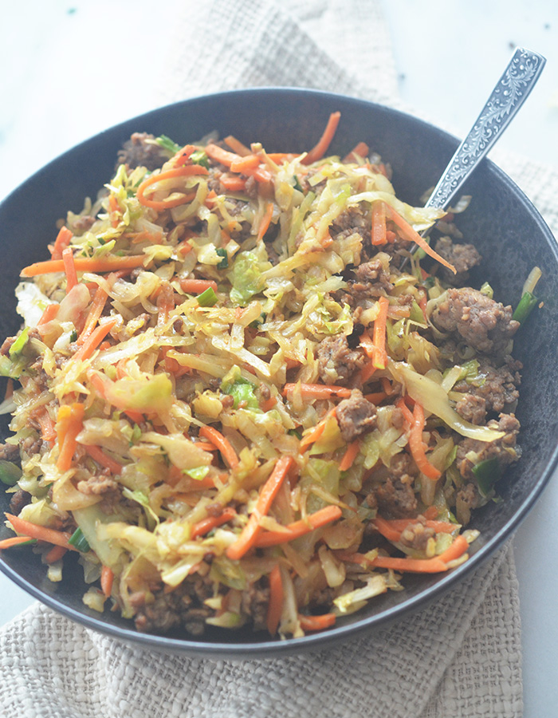

Egg roll in a bowl Recipe

Description
A simple and delicious twist on the classic eggroll. Fast and easy to make, with a rewarding taste.
Ingredients
- 1 1/2 lbs of ground beef or pork
- 1 large onion, finely diced
- 1/2 head of cabbage, shredded
- 1 large carrot, grated
- 1/2 tsp onion powder & garlic powder
- 1/2 tsp red pepper flakes
- 1 1/2 tsp of ground ginger
- 1 tbsp of minced garlic
- 1/2-3/4 cups soy sauce or coconut amino
- 2 tbsp of sesame oil
- 2 tbsp olive oil
- 3 green onions, sliced
- optional: add sriracha to taste
Instructions
- Cook ground beef in a large deep skillet over medium heat until no longer pink. Be careful not to break the ground beef into too small of pieces.
- Drain grease from skillet and return to stovetop. Add onions and minced garlic until onions have softened slightly, about 5 mins.
- add sesame oil, carrots and cabbage to the skillet. Cook for about 5 mins.
- In separate bowl combine onion powder, garlic powder, red pepper flakes, ground ginger, soy sauce, and olive oil. Pour mixture over meat and cabbage.
- Reduce heat and continue to cook for about 5 mins. Adjust to suit tastes.
- Garnish with green onions and serve.